Madrasah Tsanawiyah Negeri Semarang
Madrasah Tsanawiyah Negeri Semarang (MTsN Semarang, dahulu dikenal sebagai MTsN Susukan Kabupaten Semarang) adalah satuan pendidikan formal di bawah binaan Kementerian Agama Republik Indonesia yang menyelenggarakan pendidikan terpadu tingkat menengah pertama.
Dengan mengintegrasikan nilai-nilai Al-Qur'an, sains, teknologi digital, dan kepedulian lingkungan hidup, MTsN Semarang berkomitmen mencetak generasi santri yang berakhlak mulia, cerdas, bertanggung jawab, dan siap bersaing di tingkat nasional maupun internasional.
| Nama Satuan Pendidikan | Madrasah Tsanawiyah Negeri Semarang |
| NSM / NPSN | 121133220006 / 20364447 |
| Peringkat Akreditasi | Terakreditasi A (Nilai 95) — BAN-S/M |
| SK Penegerian | SK Menteri Agama No. 27/1980 (Tgl. 21 Mei 1980) |
| Kepala Madrasah | Muh. Muslimin, S.Ag., M.Pd.I. |
| Kepala Tata Usaha | Agus Wahyu Utomo, S.Sos. |
| Jumlah Peserta Didik | 1.022 Siswa (Laki-laki: 453, Perempuan: 569) |
| Jumlah Pendidik & Pegawai | 61 Guru & 14 Tenaga Kependidikan (Total 75) |
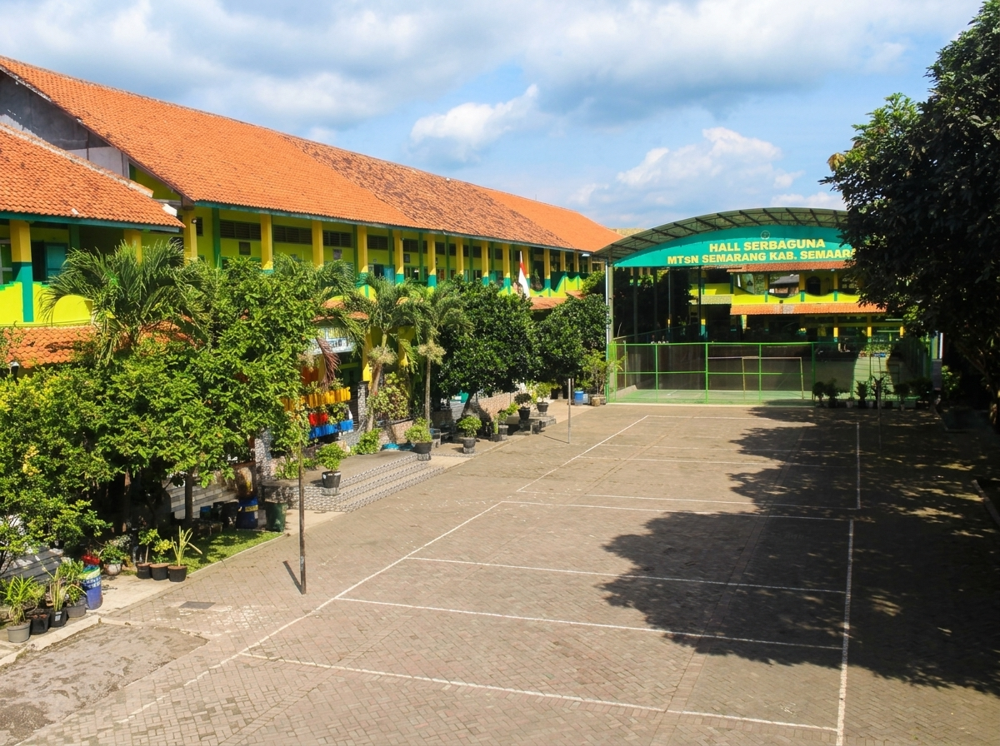
Visi & Misi MTsN Semarang
Pedoman fundamental yang menjadi kompas dalam seluruh proses pendidikan, pembentukan karakter, dan pengembangan madrasah.
“Terwujudnya Pelajar Pancasila Rahmatan lil ‘Alamiin yang Qur’ani, Berprestasi, Bertanggung Jawab dan Berwawasan Lingkungan”
Misi MTsN Semarang
- Melaksanakan proses pembelajaran dengan memprioritaskan aspek pengajaran, pengamalan, dan pengalaman secara menyeluruh.
- Menciptakan suasana pendidikan keagamaan yang kondusif bagi seluruh warga madrasah.
- Mengembangkan potensi minat, bakat, kecerdasan intelektual, serta keterampilan siswa dalam bidang sains, olahraga, dan seni.
- Menumbuhkan budaya madrasah yang disiplin, amanah, mandiri, dan berakhlakul karimah.
- Mewujudkan lingkungan madrasah yang hijau, bersih, asri, serta menanamkan kesadaran pelestarian lingkungan hidup bagi seluruh warga madrasah.
Empat Komitmen Nilai Madrasah
Sejarah Singkat Pendirian MTsN Semarang
Dari prakarsa para kyai dan MWC NU Kecamatan Susukan tahun 1965 hingga bertransformasi menjadi madrasah negeri berprestasi nasional.
Pendirian madrasah ini diprakarsai oleh tokoh pejuang pendidikan Islam: Bapak Kyai H. Syamsudin, Bapak Kyai H. Dzhakiri, dan Bapak Kyai H. Muh Ja'farin Ahmad. Atas persetujuan beberapa tokoh masyarakat dan bekerja sama dengan Majelis Wakil Cabang Nahdlatul Ulama (MWC NU) Kecamatan Susukan, disepakati untuk mendirikan lembaga pendidikan resmi bernama Madrasah Tsanawiyah Nahdlatul Ulama' (MTs NU) pada tahun 1965.
Dalam dinamika perkembangan masyarakat, madrasah mengalami penyesuaian nama menjadi MTs Al-Islam. Selanjutnya, pada tahun 1980 madrasah resmi berstatus negeri melalui Surat Keputusan Menteri Agama Republik Indonesia Nomor 27/1980 tanggal 21 Mei 1980 dengan nama Madrasah Tsanawiyah Negeri Susukan Kabupaten Semarang (merupakan relokasi resmi dari MTs Negeri Grabag 02 Magelang), yang efektif mulai tanggal 1 September 1981.
Periodisasi Kepemimpinan Kepala Madrasah:
| No | Nama Kepala Madrasah | Masa Jabatan / Periode |
|---|---|---|
| 1 | Drs. H. Qowa'id | Era Swasta s.d. 12 April 1996 |
| 2 | Drs. Sujitno | 12 April 1996 – 5 April 1999 |
| 3 | Drs. Sarbani | 5 April 1999 – 3 Juni 2002 |
| 4 | Drs. H. Istichsan | 3 Juni 2002 – 22 Maret 2007 |
| 5 | Drs. H. Mudlofir, MM. | 22 Maret 2007 – 2 Januari 2016 |
| 6 | Hj. Hidayatun, S.Ag., M.Pd. | 11 Januari 2016 – Desember 2022 |
| 7 | Nur Hadi, S.Ag., M.Pd.I. | 1 Januari 2022 – 2024 |
| 8 | Muh. Muslimin, S.Ag., M.Pd.I. | Kepala Madrasah Saat Ini (2024 – Sekarang) |
Pimpinan & Pengelola MTsN Semarang
Didukung oleh dewan pimpinan, wakil kepala madrasah, dan kepala tata usaha yang berdedikasi tinggi bagi kemajuan madrasah.
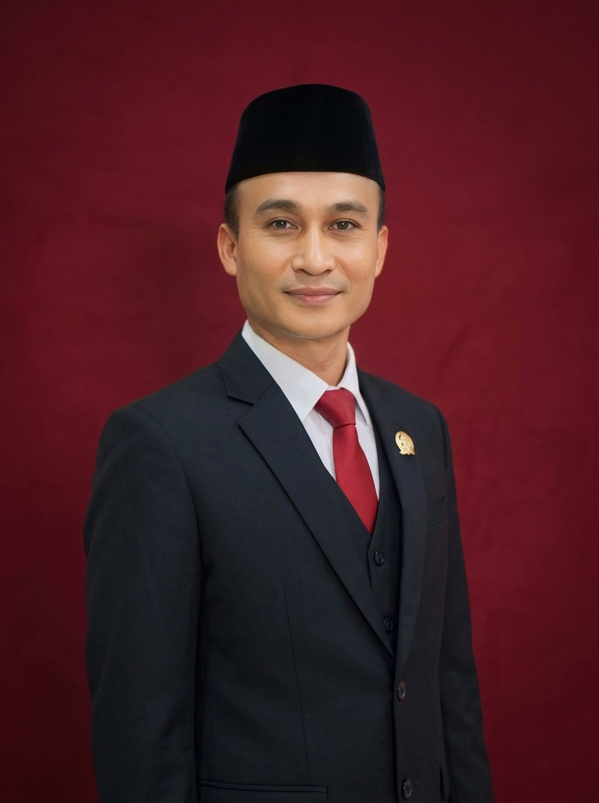
Muh. Muslimin, S.Ag., M.Pd.I.
Kepala MadrasahMemimpin pengembangan program Boarding School, KKO, dan Kurikulum Berbasis Cinta.
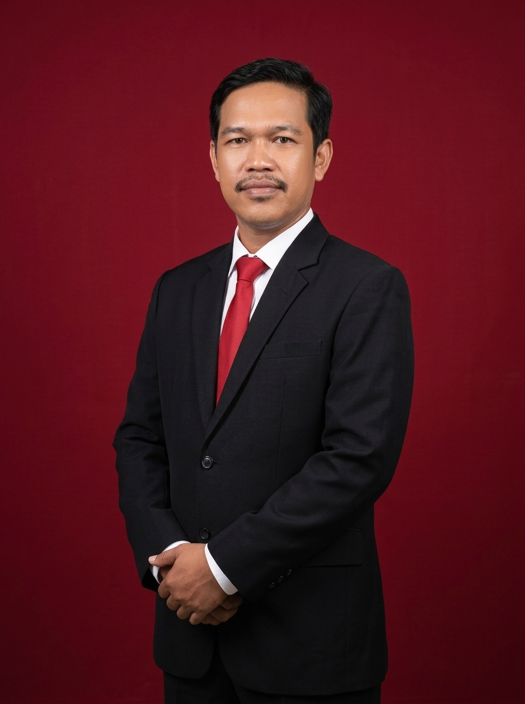
Agus Wahyu Utomo, S.Sos.
Kepala Tata UsahaMengkoordinasikan administrasi persuratan, kepegawaian, data EMIS/Simpatika, dan keuangan.
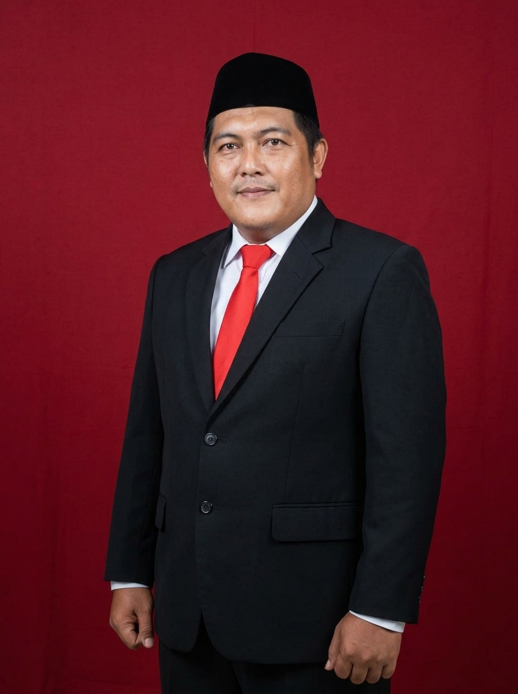
Ahmad Hasan Mafatih, M.Pd.I.
Waka Bidang Kurikulum & AkademikMerancang dan mengawasi implementasi Kurikulum Merdeka, KBC, dan evaluasi KBM madrasah.
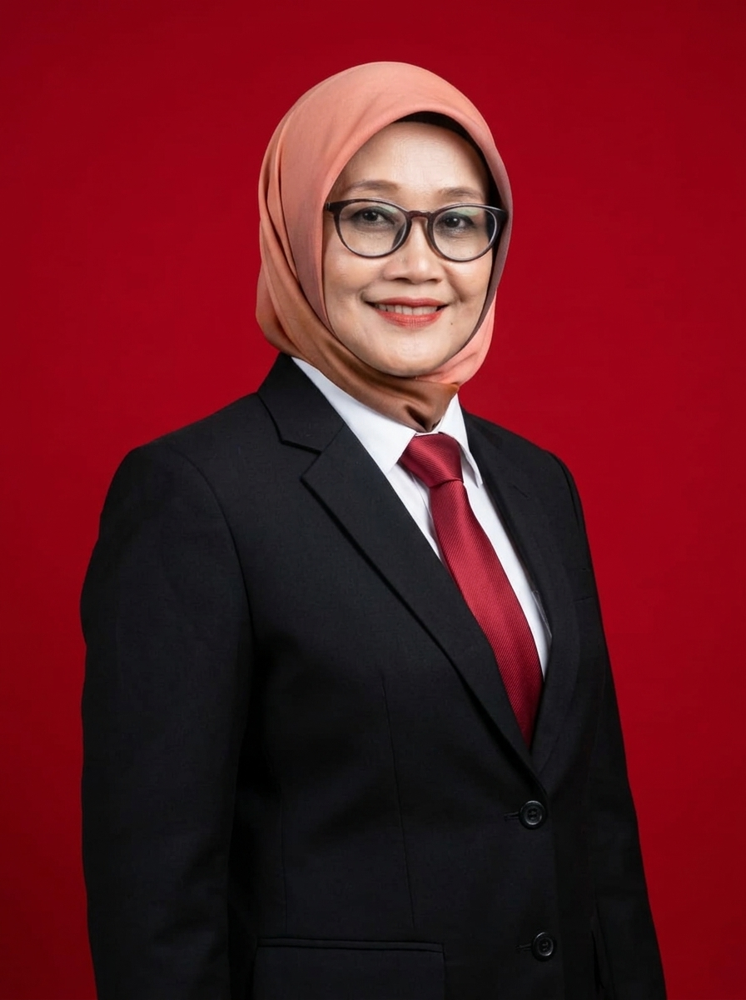
Noor Farida Yuliani, M.Pd.
Waka Bidang KesiswaanMembina kedisiplinan santri, kegiatan ekstrakurikuler, pembinaan prestasi, dan OSIS.
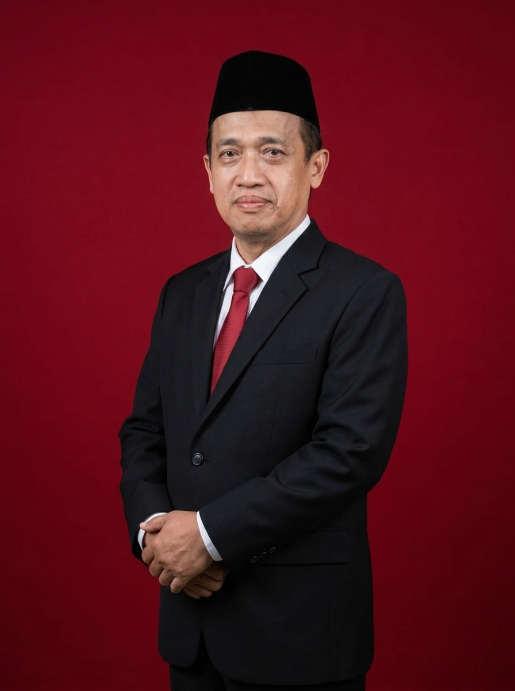
Fachrudin Rois, M.Pd.I.
Waka Bidang Humas & KemitraanMenjalin sinergi dengan komite sekolah, wali murid, instansi kedinasan, dan media komunikasi publik.
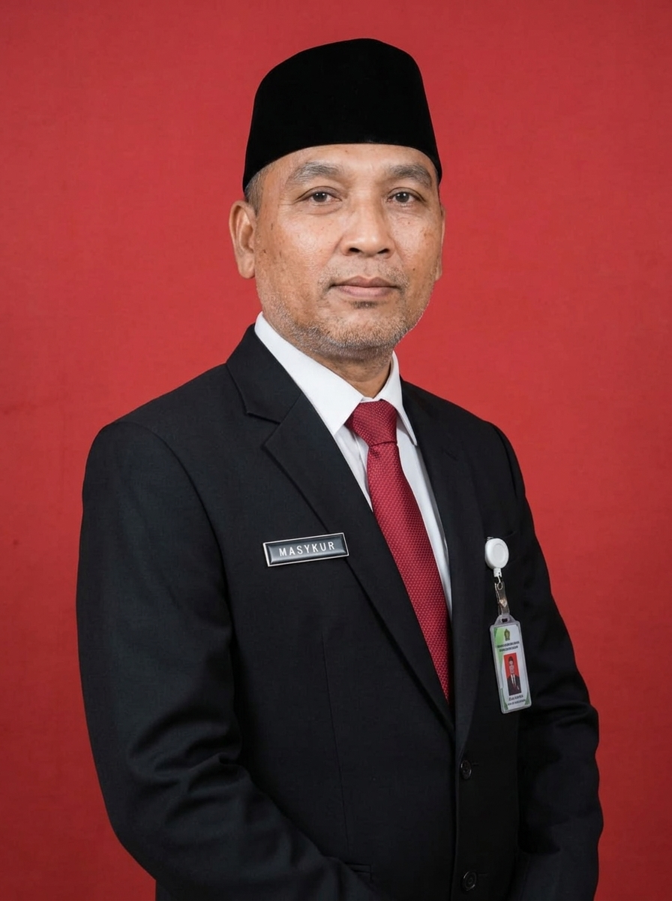
Sugiyanto, S.Pd. / Slamet Bukhori
Waka Bidang Sarana & PrasaranaMengelola pemeliharaan fasilitas gedung, sarana laboratorium, ruang kelas, dan kebersihan madrasah.
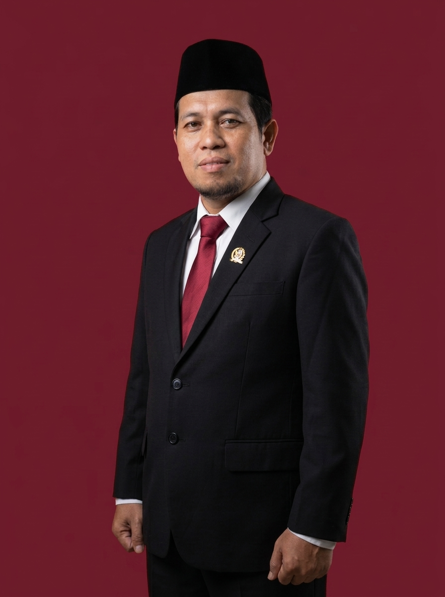
Agus Santosa, M.Pd.
Waka Bidang Keagamaan & LitbangMengawal penguatan nilai-nilai Qur'ani, program tahfidz, dan pembiasaan amaliah keagamaan santri.
Sarana & Prasarana Pendukung Pembelajaran
Lingkungan kampus yang representatif, asri, nyaman, dan dilengkapi fasilitas mutakhir untuk menjamin keberhasilan belajar siswa.
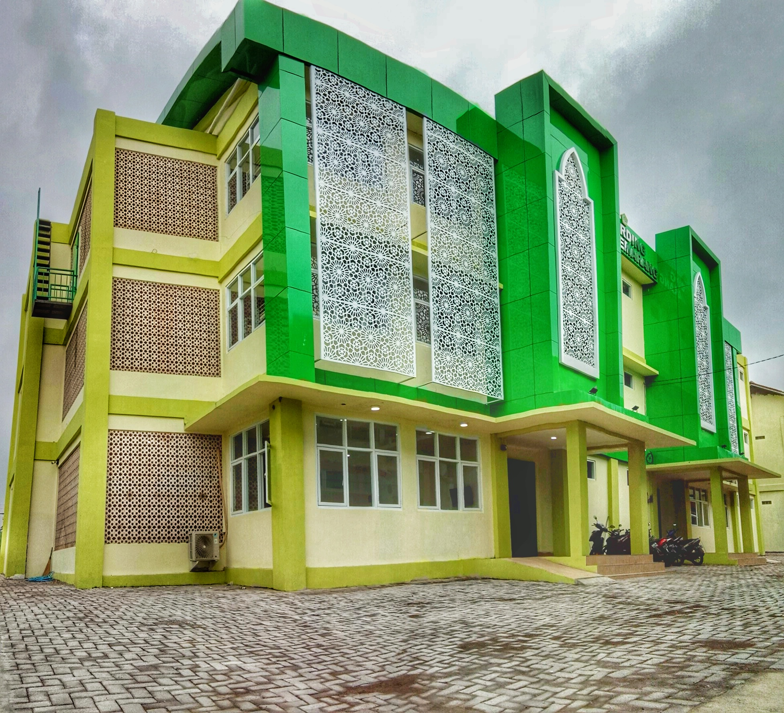
Gedung Boarding School
Fasilitas asrama terpisah putra dan putri, dilengkapi lobby resepsionis modern, kamar tidur berstandar, ruang pembina, dan aula mandiri.
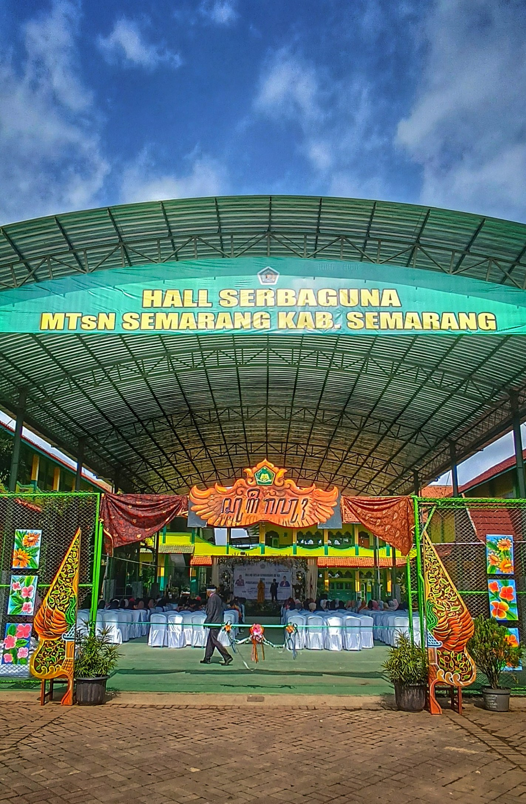
Aula Doom Serbaguna
Area aula kubah terbuka berkuran luas untuk kegiatan apel pagi, sholat dhuha berjamaah, pembinaan olahraga indoor, dan pertemuan akbar wali murid.
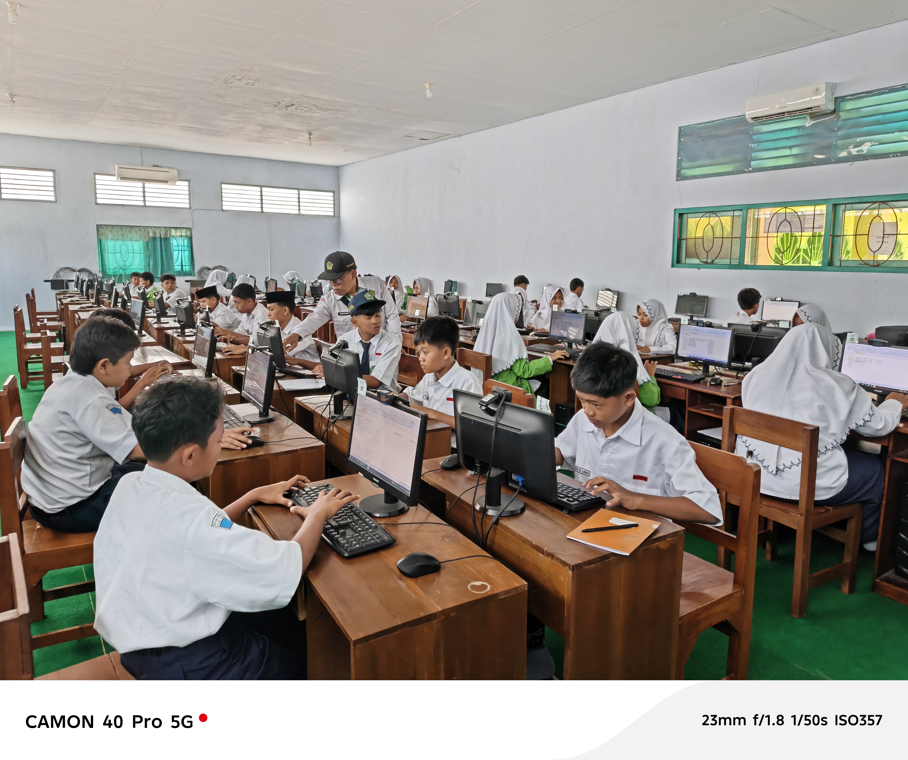
Laboratorium Komputer Multimedia
Ruang lab komputer ber-AC dengan unit PC modern terkoneksi jaringan internet cepat untuk Asesmen Nasional Berbasis Komputer (ANBK) dan KBM digital.
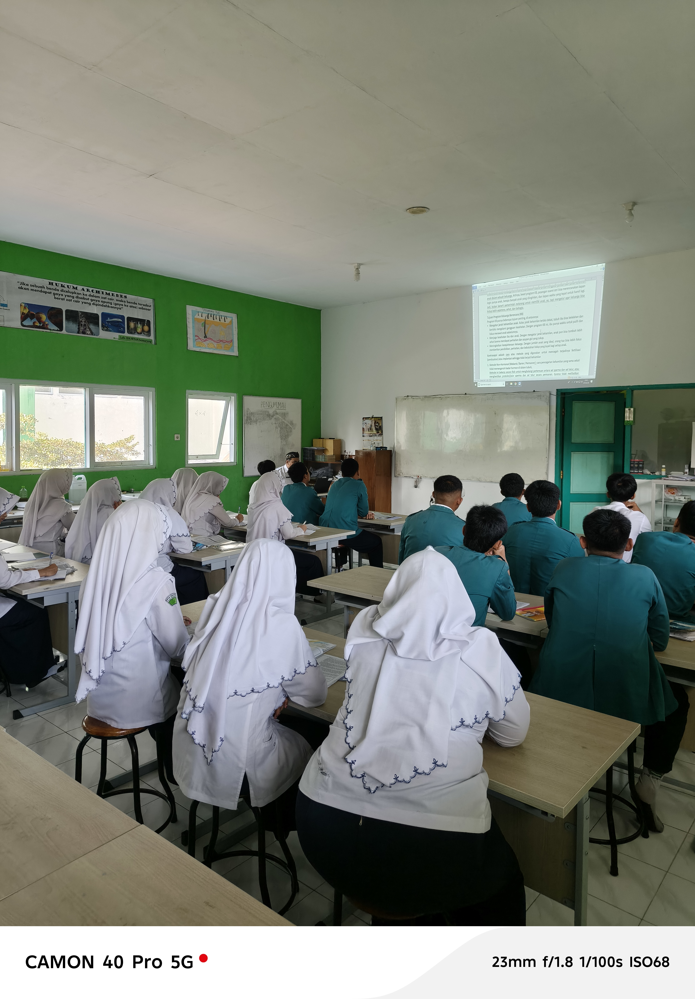
Laboratorium IPA & Riset
Peralatan praktikum fisika, biologi, mikroskop, dan sarana eksperimen sains terpadu untuk menunjang pembelajaran aktif dan olimpiade KSM.
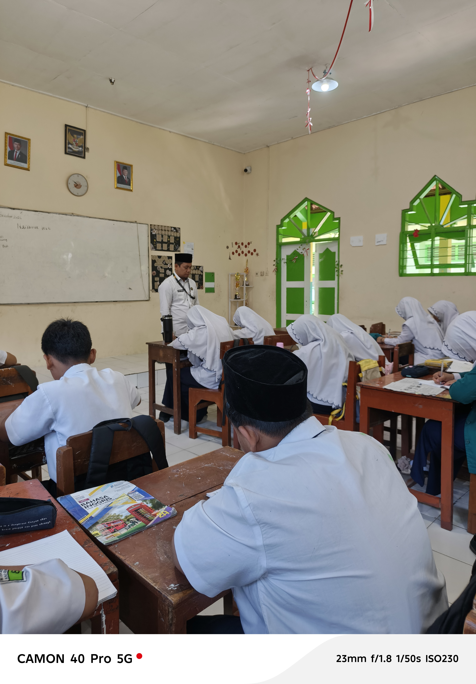
Ruang Kelas Standar Nasional
Ruang kelas dengan sirkulasi udara baik, pencahayaan memadai, instalasi listrik aman, dan perabot meja kursi yang nyaman dan ergonomis.
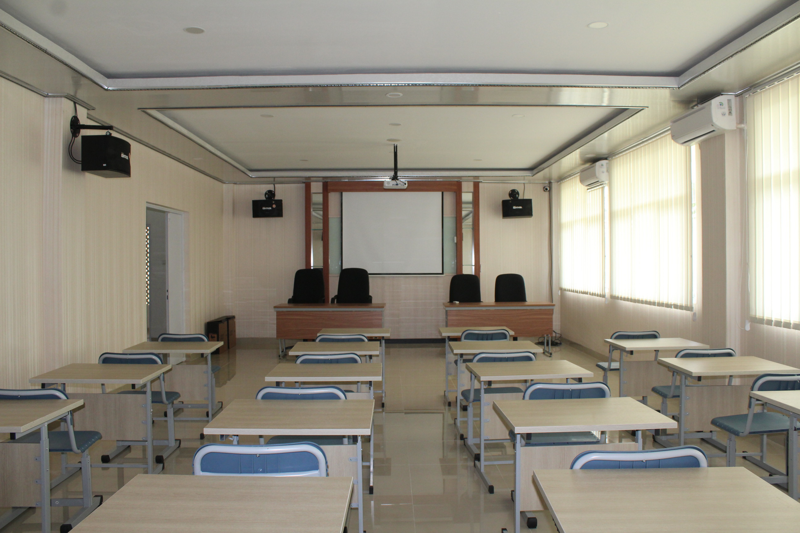
Aula & Ruang Diskusi Asrama
Tempat pelaksanaan halaqah Al-Qur'an, bimbingan malam, kajian kitab kuning, serta rapat koordinasi pengurus madrasah.